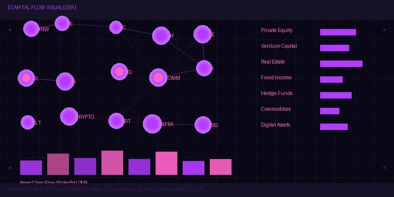

The $84 Trillion Wealth Transfer: Analytics Behind the Great Inheritance
The largest intergenerational transfer of wealth in human history is no longer a future projection — it is underway. According to Cerulli Associates' most recent estimates, approximately $84 trillion will pass from older generations to heirs in the United States alone between 2024 and 2045. This transfer, equivalent to roughly three times current US GDP, will fundamentally reshape the wealth management industry, family office structures, and the investment preferences that drive capital markets.
The transfer occurs in two primary waves. The first and larger wave — approximately $53 trillion — flows from the Silent Generation and Baby Boomers (born 1928-1964) to Generation X (born 1965-1980). The second wave — approximately $31 trillion — moves from Generation X to Millennials (born 1981-1996) and, in some cases, directly from Baby Boomers who bypass their children through generation-skipping trusts and direct bequests to grandchildren.
Demographic Wealth Transfer Projections: The Numbers in Detail
The $84 trillion figure, while staggering, understates the full scope of the transition when global wealth is considered. When including international assets held by US persons and the increasing globalization of wealthy families, the total transferable wealth may approach $100 trillion. The concentration is extreme: the top 1% of households by net worth (approximately 1.3 million households) control roughly 35% of the wealth being transferred, while the top 10% control nearly 70%.
Geographically, the transfer is concentrated in a handful of states. California, New York, Texas, Florida, and Illinois account for approximately 48% of all transferable wealth, creating distinct regional dynamics for wealth management firms. Florida and Texas, with their favorable tax environments, are expected to see an in-migration of $3-5 trillion in wealth as retirees relocate, further concentrating the opportunity in no-income-tax jurisdictions.
Advisor Retention Risk: The 70% Problem
Perhaps the most alarming statistic for the wealth management industry is the 70% attrition rate — the percentage of heirs who terminate the relationship with their parents' financial advisor within 12 months of receiving an inheritance. This statistic has remained stubbornly consistent across multiple studies spanning two decades, suggesting a structural rather than cyclical problem.
The root causes are well-documented but difficult to address: insufficient relationship-building between advisors and the next generation during the parents' lifetime, a mismatch between traditional advisory service models and millennial preferences for digital engagement, and a fundamental values gap between generations regarding investment philosophy. Our analysis of family office transitions reveals that when the next generation is actively engaged in family wealth governance at least five years before the primary wealth creator's death, retention rates improve to approximately 65%.
Millennial Preferences: ESG, Digital, and Transparency
The investment preferences of inheriting millennials differ markedly from their parents' generation across three dimensions. First, 72% of millennial investors express a preference for ESG and sustainable investment strategies, compared to just 28% of baby boomers. Second, 64% prefer digital-first advisory relationships with on-demand access to portfolio data rather than quarterly in-person meetings. Third, 58% demand full fee transparency with itemized breakdowns of advisory, custody, and product costs — a level of disclosure that many traditional wealth management firms struggle to provide.
These preference shifts are already reshaping product development across the industry. Thematic ETFs aligned with UN Sustainable Development Goals have attracted over $85 billion in flows since 2023, while digital advice platforms serving the $1-10 million segment have grown AUM at 40% annually. Wealth managers who fail to adapt their service models to these generational preferences risk losing not just the current inheritance wave but the compounding effect of assets that will grow over the heirs' multi-decade investment horizons.
Family Office Growth: The Institutional Response
The scale and complexity of the wealth transfer is driving unprecedented growth in the family office sector. The number of single-family offices globally has expanded from approximately 8,000 in 2019 to over 12,500 in 2026, with the average AUM per office rising to $1.2 billion. Multi-family offices have grown even faster, consolidating smaller family offices that find the cost of standalone operations — averaging $3.2 million annually — difficult to justify for portfolios below $500 million.
Our benchmarking data from 350+ family offices reveals that the most successful transitions share common characteristics: formal family governance structures including family constitutions and investment policy statements, dedicated next-generation education programs, and gradual transfer of investment decision-making authority over a 3-5 year period. Offices that implement these practices report 82% next-generation satisfaction rates, compared to 41% for those without formal governance frameworks.
Estate Planning Analytics: The Data-Driven Approach
The complexity of modern estate planning — spanning multiple jurisdictions, trust structures, tax regimes, and family dynamics — increasingly demands data-driven analytics. Advanced Monte Carlo simulations now model not just investment outcomes but entire multi-generational wealth trajectories, incorporating variables such as life expectancy, healthcare costs, philanthropic intentions, and the probability of family disputes.
The estate tax exemption, currently at $13.61 million per individual ($27.22 million for married couples) and indexed for inflation, is scheduled to sunset at the end of 2025 under current law, reverting to approximately $7 million per individual. While most practitioners expect legislative action to prevent a full reversion, the uncertainty has created a surge in accelerated gifting strategies. Our analysis of IRS gift tax return data shows a 34% increase in taxable gifts above $10 million in 2025 compared to 2024, as families rush to utilize the elevated exemption before any potential reduction.
For wealth management professionals, the $84 trillion transfer is not merely a demographic trend but an existential challenge — and opportunity — that will define the industry's winners and losers over the next two decades. The firms that invest now in next-generation engagement, digital capabilities, ESG expertise, and data-driven estate planning analytics will capture a disproportionate share of the assets in motion.
Related Wealth Analytics

Family Office Benchmarking: 350+ Offices Analyzed

HNW Asset Allocation Trends: $34T in Motion
